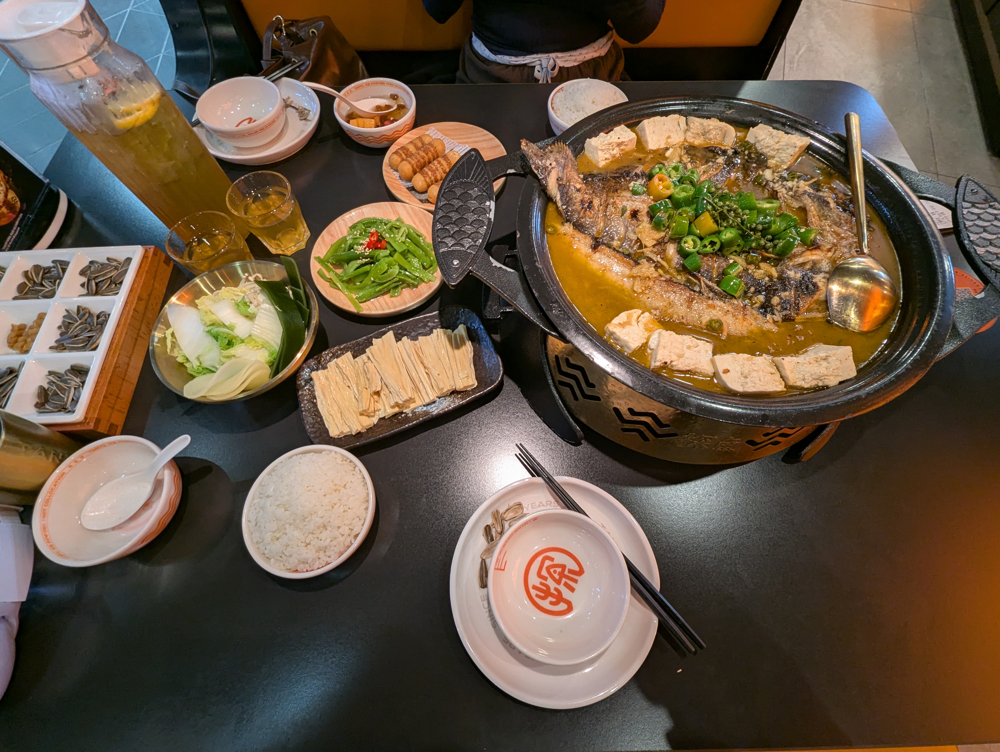
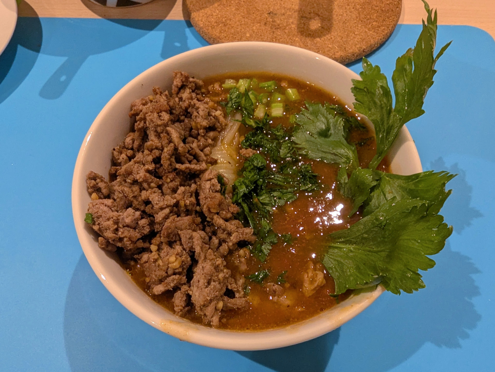

Everything else. Not a picky eater, very adventurous.
Drinks
Water
Fruit Tea (Adjacent to boba)
Juice (Not fruit tea)
Soda
Tanyu

Image of food from Tanyu that I recently went. Would recommend. Took this photo becuse I like taking food photos.
Soup

This is a HaiDiLai inspired tomato soup I made at home, there's plenty of other food images too but this is one of them. Took it because I often take photos of all my cooking.